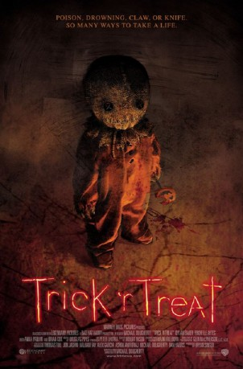

#9361 Süsses, sonst gibt's Saures!
Alternativ: Trick 'r Treat
 
 IMDB-Wertung: 6.8 / 10
IMDB-Wertung: 6.8 / 10  Metascore: 0
Metascore: 0 
Five interwoven stories that occur on the same block, on the same night. A couple finds what happens when they blow a jack o' lantern out before midnight, a high school principal has a secret life as a serial killer, a college virgin might have met the right guy for her, a group of mean teens play a prank that they take too far, and a hermit is visited by a special trick or treater.
Jahr: 2007
Dauer: 82 Minuten
FSK: 18
Land: USA Studio: Scream FactoryTonspuren: DD5.1 - ,
Untertitel: Deutsch, Englisch,
Auflösung: 720p (1280x528) Größe: 4741 MB
Genre: Thriller, Horror, Komödie
Regisseur: Michael Dougherty
Drehbuch: Michael Dougherty
Soundtrack: Douglas Pipes
Darsteller:
 Dylan Baker als Steven
Dylan Baker als Steven- Rochelle Aytes als Maria
 Quinn Lord als Sam / Peeping Tommy
Quinn Lord als Sam / Peeping Tommy- Lauren Lee Smith als Danielle
- Moneca Delain als Janet
 Tahmoh Penikett als Henry
Tahmoh Penikett als Henry Brett Kelly als Charlie
Brett Kelly als Charlie Britt McKillip als Macy
Britt McKillip als Macy- Jean-Luc Bilodeau als Schrader
- Samm Todd als Rhonda
 Anna Paquin als Laurie
Anna Paquin als Laurie Brian Cox als Mr. Kreeg
Brian Cox als Mr. Kreeg Leslie Bibb als Emma
Leslie Bibb als Emma- Connor Christopher Levins als Billy
 Patrick Gilmore als Bud The Cameraman
Patrick Gilmore als Bud The Cameraman- Troy Everett als Bud's Assistant
 Barbara Kottmeier als Centaur Girl
Barbara Kottmeier als Centaur Girl Matthew Kevin Anderson als Clerk
Matthew Kevin Anderson als Clerk C. Ernst Harth als Giant Baby
C. Ernst Harth als Giant Baby- Catherine Barroll als Mother
 Christine Willes als Mrs. Henderson
Christine Willes als Mrs. Henderson- Caroline Redekopp als Reporter
 Richard Harmon als Vampire Kid
Richard Harmon als Vampire Kid Laura Mennell als Allie
Laura Mennell als Allie- Gerald Paetz als Young Kreeg / School Bus Driver
 Juan Carlos Velis als Conquistador
Juan Carlos Velis als Conquistador- Wanda Ayala als Party Girl #2
 Amy Esterle als Party Girl #3
Amy Esterle als Party Girl #3- Karen Worrod als Clown Girl (uncredited)
- Isabelle Deluce als Sara
- Alberto Ghisi als Chip
- James Willson als Alex
- Derek McIver als Centaur Guy
- Tatiana Anderson als Lady Barbarian
- Chloe Smeltzer als Little Pig #1
- Kiah Mortison als Little Pig #2
- Livia Mortison als Little Pig #3
- Keanen Schnoor als Matthew
- Ty Hill als Nathan
- Jesse Haddock als Teenager
- Becky Franklin als Party Girl #1
- Zip als Spite The Dog
- Stephane Savoie als Buddha Head (uncredited)
Datei: X:\FSK18-2000-2009\Süsses, sonst gibt's Saures! (2007, FSK18, 1280x528).mkv seit 15.08.2018
Festplatte: FSK18
 Es gibt insgesamt 106 Filme in der Gruppe 'FSK18-2000-2009'
Es gibt insgesamt 106 Filme in der Gruppe 'FSK18-2000-2009'